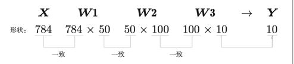
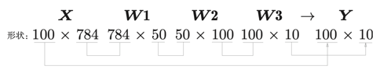

sample_weight.pkl
dataset
手写数字识别 需要引入dataset文件，因为本书附带源代码数据集下载地址已失效，故引入已下载好的数据集
import sys, ossys.path.append(os.pardir) from dataset.mnist import load_mnist(x_train, t_train), (x_test, t_test) = load_mnist(flatten=True , normalize=False ) print (x_train.shape) print (t_train.shape) print (x_test.shape) print (t_test.shape)
(60000, 784)
(60000,)
(10000, 784)
(10000,)
读入MNIST数据集
Parameters
----------
normalize : 将图像的像素值正规化为0.0~1.0
one_hot_label :
one_hot_label为True的情况下，标签作为one-hot数组返回
one-hot数组是指[0,0,1,0,0,0,0,0,0,0]这样的数组
flatten : 是否将图像展开为一维数组
Returns
-------
(训练图像, 训练标签), (测试图像, 测试标签)
normalize这种归一化是深度学习中的常见预处理步骤，可以：
使不同尺度特征具有可比性
帮助优化算法更快收敛
提高数值计算的稳定性
(x_train, t_train), (x_test, t_test) = load_mnist(flatten=True , normalize=True ) print (x_train.shape)print (t_train.shape)print (x_test.shape)print (t_test.shape)
(60000, 784)
(60000,)
(10000, 784)
(10000,)
import sys, ossys.path.append(os.pardir) import numpy as npfrom dataset.mnist import load_mnistfrom PIL import Imagefrom matplotlib import pyplot as pltdef img_show (img ): pil_img = Image.fromarray(np.uint8(img)) pil_img.show() (x_train, t_train), (x_test, t_test) = load_mnist(flatten=True , normalize=False ) img = x_train[0 ] label = t_train[0 ] print (label) print (img.shape) img = img.reshape(28 , 28 ) print (img.shape) img_show(img) plt.imshow(img) plt.show()
5
(784,)
(28, 28)
神经网络的推理处理 对MNIST数据集实现神经网络的推理处理。
import pickledef sigmoid (x ): return 1 / (1 + np.exp(-x)) def softmax (a ): if a.ndim == 2 : a = a.T a = a - np.max (a, axis=0 ) y = np.exp(a) / np.sum (np.exp(a), axis=0 ) return y.T c = np.max (a) exp_a = np.exp(a-c) return exp_a / np.sum (exp_a) def get_data (): (x_train, t_train), (x_test, t_test) = \ load_mnist(normalize=True , flatten=True , one_hot_label=False ) return x_test, t_test def init_network (): with open ("sample_weight.pkl" , 'rb' ) as f: network = pickle.load(f) return network def predict (network, x ): W1, W2, W3 = network['W1' ], network['W2' ], network['W3' ] b1, b2, b3 = network['b1' ], network['b2' ], network['b3' ] a1 = np.dot(x, W1) + b1 z1 = sigmoid(a1) a2 = np.dot(z1, W2) + b2 z2 = sigmoid(a2) a3 = np.dot(z2, W3) + b3 y = softmax(a3) return y x, t = get_data() network = init_network() accuracy_cnt = 0 for i in range (len (x)): y = predict(network, x[i]) p = np.argmax(y) if p == t[i]: accuracy_cnt += 1 print ("Accuracy:" + str (float (accuracy_cnt) / len (x)))
Accuracy:0.9352
批处理 x, _ = get_data() network = init_network() W1, W2, W3 = network['W1' ], network['W2' ], network['W3' ]
(10000, 784)
(784,)
(784, 50)
(50, 100)
(100, 10)

我们想用 predict()函数一次性打包处理 100 张图像。为此，可以把 x 的形状改为 100 × 784，将100 张图像打包作为输入数据。

输 入 数 据 的 形 状 为 100 × 784，输 出 数 据 的 形 状 为100 × 10。这表示输入的 100 张图像的结果被一次性输出了。比如，x[0]和y[0]中保存了第 0 张图像及其推理结果，x[1]和 y[1]中保存了第 1 张图像及其推理结果，等等。批(batch)
x, t = get_data() network = init_network() batch_size = 100 accuracy_cnt = 0 for i in range (0 , len (x), batch_size): x_batch = x[i:i+batch_size] y_batch = predict(network, x_batch) p = np.argmax(y_batch, axis=1 ) accuracy_cnt += np.sum (p == t[i:i+batch_size]) print ("Accuracy:" + str (float (accuracy_cnt) / len (x)))
Accuracy:0.9352
argmax()获取值最大的元素的索引，参数 axis=1,这指定了在 100 × 10 的数组中，沿着第 1 维方向（以第 1 维为轴）找到值最大的元素的索引（第 0 维对应第 1 个维度）
x = np.array([[1 ,2 ,16 ,3 ],[5 ,8 ,7 ,6 ],[12 ,10 ,11 ,12 ],[13 ,14 ,3 ,16 ]]) y = np.argmax(x,axis=1 ) print (y)
[2 1 0 3]
y = np.argmax(x,axis=0 ) print (y)
[3 3 0 3]
在 NumPy 数组之间使用比较运算符（==）生成由 True/False构成的布尔型数组，并计算 True的个数
y = np.array([1 , 2 , 1 , 0 ]) t = np.array([1 , 2 , 0 , 0 ]) print (y==t)print (np.sum (y==t))
[ True True False True]
3


{kind=link}
{kind=link}